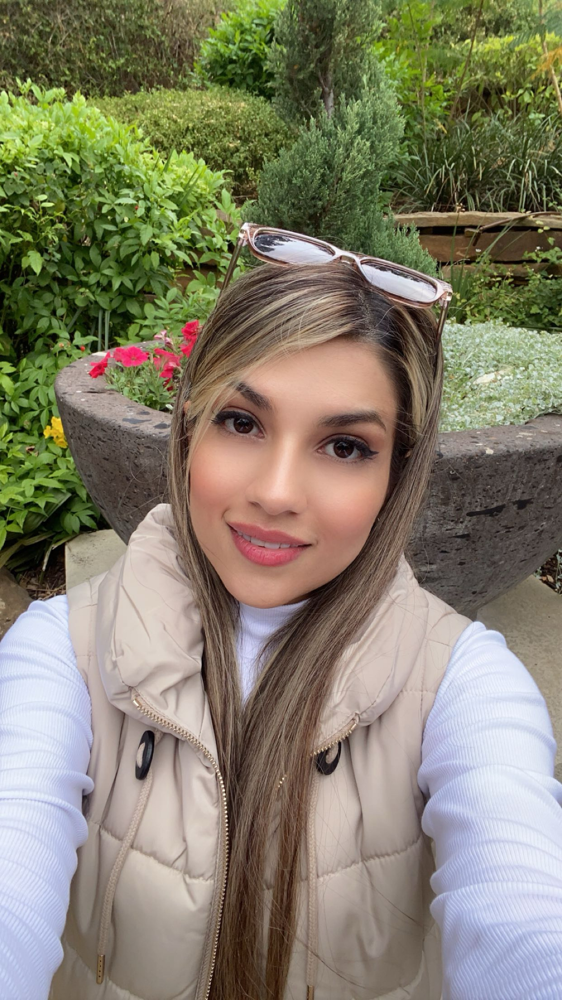
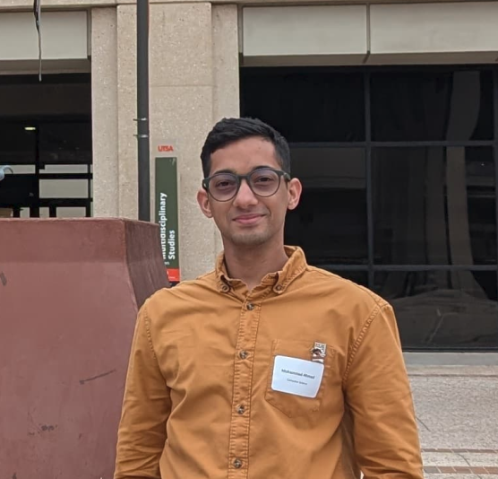
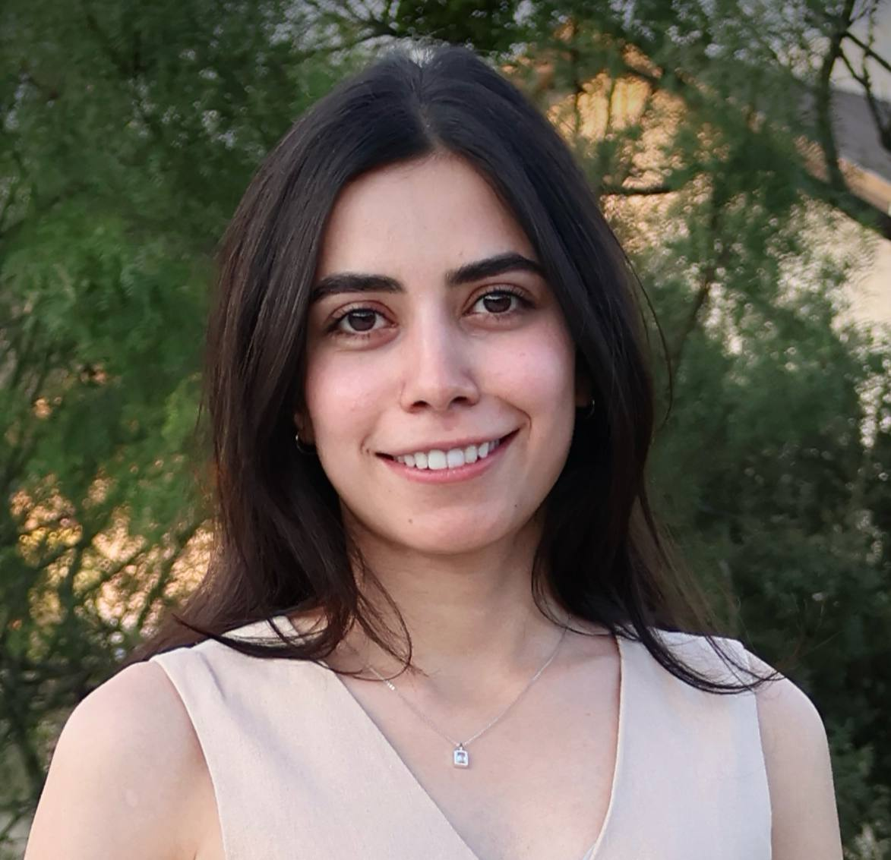
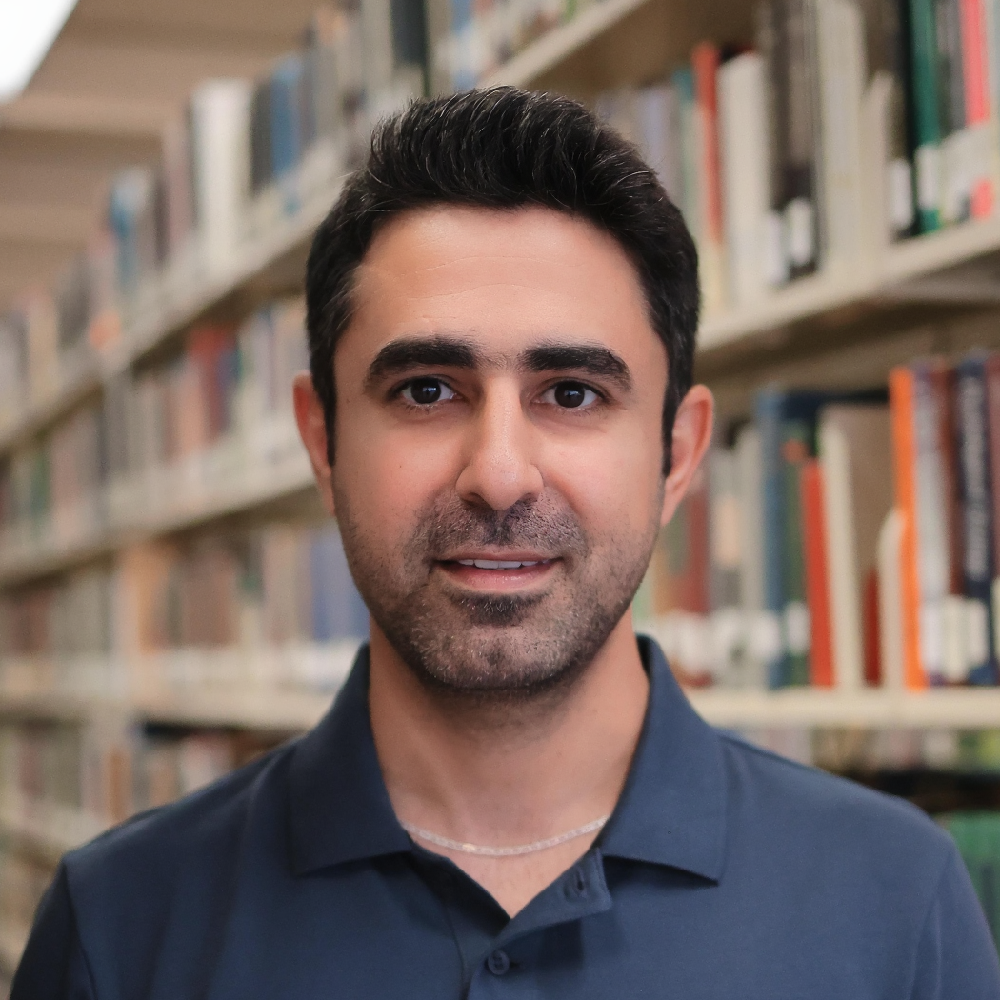
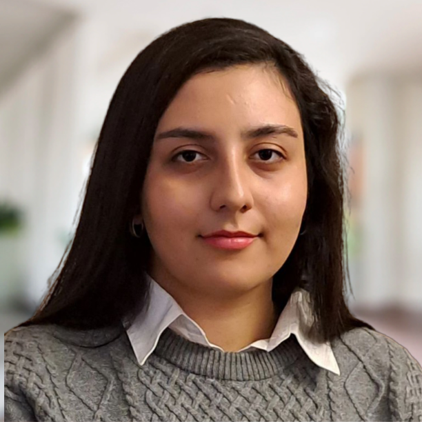
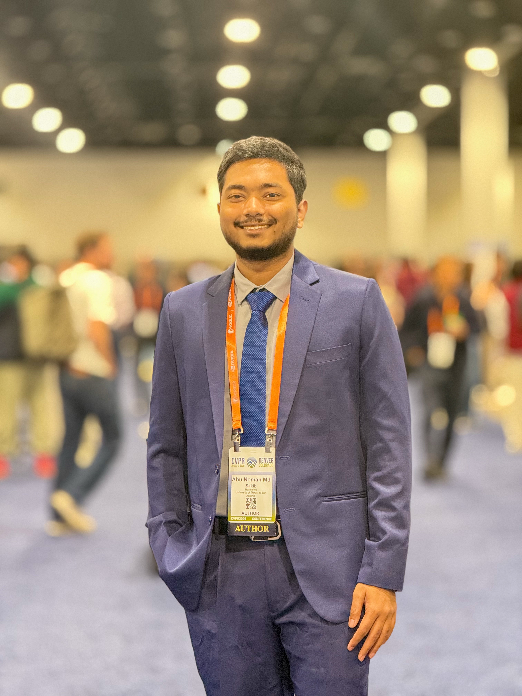

Meet Our Officers
The CSGRAD UT San Antonio Executive Board and Board Members
Executive Board

Nadia (Fatemeh Sadat) Masoumi
she/her President- Directed the organization's strategy, planning, and daily operations
- Managed projects, delegated responsibilities, and monitored progress
- Organized and chaired meetings, preparing agendas and coordinating activities
- Represented graduate students in departmental and university discussions
- Led initiatives and events to support graduate student engagement and professional development
Bio
Nadia (Fatemeh Sadat) Masoumi is a Ph.D. student in Computer Science researching AI for computational biology. She enjoys exploring emerging AI technologies. When she's not in the lab, she enjoys Pilates, painting, cooking, reading, fashion, and spending time with friends and family.
LinkedIn ↗
Mohammad Ahmad
he/him Vice President- Assisted the President in organizational planning, operations, and decision-making
- Organized meeting agendas, recorded minutes, and maintained official documents
- Chaired CSGRAD meetings in the President's absence when needed
- Managed email communications with members and the graduate student community
- Supported the planning of events, documents, and organizational initiatives
Bio
Hi All! I'm Mohammad, a PhD student working on Computer Architecture and In-Memory Computing. I love hiking, cooking, and playing video games. Hit me up if you want Banana Bread — I make it once or twice a month and I'm proud of my recipe!

Rojan Hosseini
she/her Treasurer- Managed the organization's budget, bookkeeping, and all financial transactions
- Oversaw funding applications, expense reimbursements, and ensured responsible use of funds
- Maintained detailed financial records and prepared regular budget and expenditure reports
- Tracked event attendance, participation statistics, and financial outcomes to support planning and decision-making
- Assisted the President with financial planning, reporting, and organizational operations
Bio
Rojan is a PhD student in Computer Science at UT San Antonio, advised by Dr. Mitra Hosseini. Her research focuses on requirements engineering, privacy, and legal compliance in AI systems, with applications in healthcare and medical technology.
LinkedIn ↗
Rambod Ghandiparsi
he/him Public Relations Secretary- Managed CSGRAD's social media accounts and public communications
- Created and promoted event announcements and engaging digital content to increase awareness of CSGRAD and its activities
- Captured photos and videos at events and maintained an organized archive of media assets for the Web Secretary
- Developed communication materials to engage graduate students and the broader university community
- Promoted the organization's mission, events, and achievements to enhance visibility, participation, and community engagement
Bio
Rambod is a Ph.D. student in the Data-Driven Software Engineering (DDSE) lab, where he researches bridging the gap between user ideas and software code. He enjoys traveling, photography, tennis, music, and movies.
LinkedIn ↗
Nasim Faridnia
she/her Web Secretary- Develop and maintain the CSGRAD website based on organizational needs and executive requests
- Manage GitHub repositories, website source code, organizational digital documentation, and maintain comprehensive technical documentation including architecture, deployment procedures, maintenance guidelines, and transition materials for future officers
- Publish and maintain event updates, news, galleries, and other website content in coordination with the Public Relations Secretary
- Collaborate with the Public Relations Secretary to ensure timely and consistent communication across the website and social media platforms
Bio
Nasim is a PhD student working on the intersection of Natural Language Processing and Computer Vision. A nerd at heart, she loves anything Sci-fi and geeking over movies and video game lore. Her hobbies are hiking, baking and playing the piano.
LinkedIn ↗Board Members

Abu Noman Md. Sakib
he/him Board MemberBio
Ph.D. student in Computer Science at UT San Antonio researching Explainable AI, Trustworthy Machine Learning, Computer Vision, and Foundation Models. Former Senior Software Engineer who enjoys bridging real-world engineering with cutting-edge research. Outside the lab, he hikes, travels, and photographs his adventures — including summiting Colorado's highest peak and visiting National Parks across the U.S.
LinkedIn ↗Alumni Officers
2023
- PresidentPragyan K C
- Vice PresidentCalix Barrus
- TreasurerSakhawat Saimon
- Public RelationsSadia Jahan
2024
- PresidentPragyan K C
- Vice PresidentCalix Barrus
- TreasurerFatemeh Haji
- Public RelationsShadman Latif
2025
- PresidentCalix Barrus
- Vice PresidentShadman Latif
- TreasurerFatemeh Haji
- Public RelationsFatemeh Sadat (Nadia) Masoumi
- Board MemberRambod Ghandiparsi